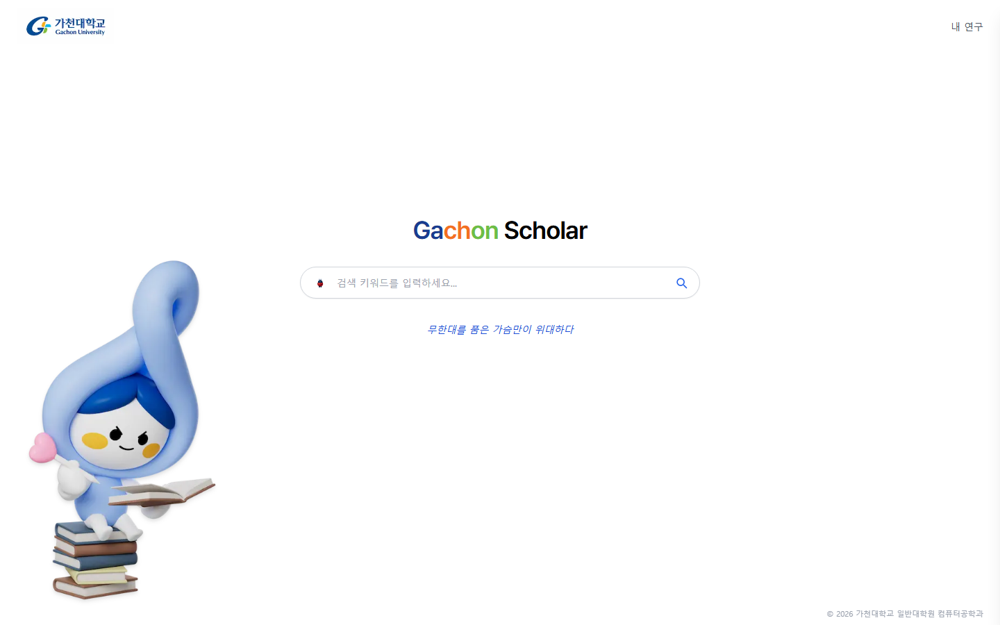

A multi-agent platform for systematic literature review. Enter a research topic, and it runs the PRISMA 2020 pipeline — from search to a written review report — without manual steps in between.

| Frontend | Next.js 14, TypeScript, Tailwind CSS |
| Backend | NestJS 10, Prisma ORM, PostgreSQL 16 |
| Agent pipeline | FastAPI, LangGraph StateGraph |
| Full-text retrieval | Playwright, pypdf, httpx |
| Search sources | PubMed E-utilities, Semantic Scholar API, SerpAPI (Google Scholar) |
| Infrastructure | Docker Compose, Server-Sent Events |
git clone https://github.com/Limminsik/gachonscholar.git cd gachonscholar cp .env.example ai-service/.env # add your API keys docker compose up --build # → http://localhost:3000
The platform runs on your own machine with your own API keys, so there is no hosted demo. Details are in the repository README.